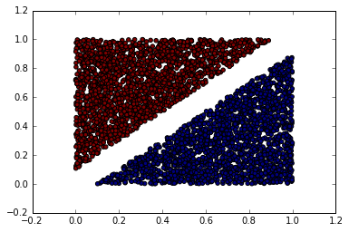

Written with StackEdit.
Creating a Simple Neural Network
Assumptions - familiarity with Machine Learning concepts
familiarity with Python programming
This example will demonstrate how to read data from a csv file and train a simple neural network on the data.
Files required -
data.csv
singlenode.py
Data
The data represents two clusters of linearly separable points. Linearly Separable Data. The data is storeed in a CSV (Comma Separated Values) file. CSV is very common way to stores tabulated data. The data.csv file contains three columns. First two columns being the and coordinates and the third column is the class of the point. The class can be either 1 or 0. This is going to be our ‘training data’.
To import the data fro the CSV file we need to construct a pipleline having the following stages -
- The list of filenames
- Filename queue
- A Reader for the file format
- A decoder for a record read by the reader
- Example queue
To read text files in comma-separated value (CSV) format, use a tf.TextLineReader with the tf.decode_csv operation.
import tensorflow as tf
import numpy as np
filename_queue = tf.train.string_input_producer(['linear-data.csv'])
N = 1000
reader = tf.TextLineReader()
key, value = reader.read(filename_queue)
record_defaults = [[0.], [1.], [1.]]
col1, col2, col3 = tf.decode_csv(value, record_defaults=record_defaults)
features = tf.pack([col1, col2])
We begin by creating a queue of all the names of file we plan to read. Then we create a ‘reader’. ‘Reader’ takes the filename queue as input. Every file in the queue is read line by line. The output of this node is a list of all the lines with a unique key. With ‘tf.decode_csv’ we create another node decodes each line into a 3-tuple. The first two elements of the tuple represent the coordinates of the point. The third element Finally we use another node to pack the coordinates into a numpy array.
So far we haven’t really run any code. Only the Computational Graph was setup.
points = np.empty([N, 2], dtype = float)
labels = np.empty([N, 1], dtype = int)
with tf.Session() as sess:
# Start populating the filename queue.
coord = tf.train.Coordinator()
threads = tf.train.start_queue_runners(coord=coord)
tf.initialize_all_variables().run()
for i in range(N):
# Retrieve a single instance:
points[i], labels[i] = sess.run([features, col3])
coord.request_stop()
coord.join(threads)
A new session is created. Each time we call the sess.run() we read one line and store the values into the numpy arrays - points and labels. So we run a loop N number of times to readd all the lines. You must call tf.train.start_queue_runners to populate the queue before you call run or eval to execute the read. Otherwise read will block while it waits for filenames from the queue.
Next we will create a Computational Graph for a Neural Network
x = tf.placeholder(tf.float32, [None, 2])
W = tf.Variable(tf.random_normal([2, 1], stddev = 0.35))
b = tf.Variable(tf.random_normal([1,1], stddev = 0.35))
y = tf.sigmoid(tf.matmul(x, W) + b)
y_ = tf.placeholder(tf.float32, [None, 1])
error = tf.nn.l2_loss(y - y_) + 0.2*((tf.nn.l2_loss(W) + tf.square(b)))
train_step = tf.train.GradientDescentOptimizer(0.1).minimize(error)
This creates a  Singe Node Neural Network.
Singe Node Neural Network.
A neural network is essentially a complex equation of matrices. Tensorflow treats the network as such. So we do not define each node of the neural network, we stead we create nodes that compute an intermediate value of the matrix equation. I have wrtitten down the euqations as computed by the node. But this knowledge is not important to be able to run the code.
y = Sigmoid(xW + b)
where x is 1x2 matrix
W is a 2x2 matrix
b is a scalar
The loss value for the neural network is computed as
Finally we create a node called train_step which minimizes the loss using a gradient descent optimizer.
prediction = tf.equal(tf.round(y), y_)
accuracy = tf.reduce_mean(tf.cast(prediction, “float”))
with tf.Session() as sess:
tf.initialize_all_variables().run()
step = 10
epochs = 4
for e in range(0, epochs):
for i in range(0, 4000, step):
sess.run(train_step, feed_dict={x: examples[i:i+step], y_: labels[i:i+step]})
prediction_value = sess.run(tf.round(y), feed_dict={x:examples[4001:5000], y_:labels[4001:5000]})
accuracy_value = sess.run(accuracy, feed_dict={x:examples[4001:5000], y_:labels[4001:5000]})
W_value = W.eval()
b_value = b.eval()
print('Model Trained')
print('W = ' + repr(W_value))
print('b = ' + repr(b_value))
We input the training data in batches of 10. The entire network is trained for 4 epochs. After the training ends we predict the classes for the remaining 1000 samples.